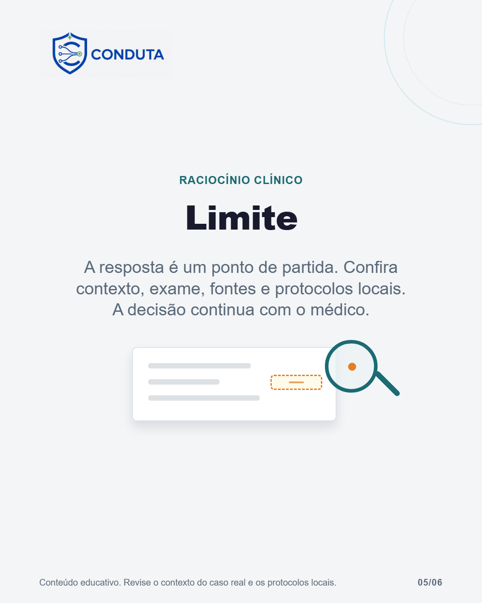

Conheça o Conduta em seis telas

Legenda
Decisão difícil não precisa começar com uma busca fragmentada. No Conduta, você pode descrever o caso em linguagem natural e receber uma análise organizada para revisar: resumo, hipóteses, alertas e dados faltantes. Neste carrossel, usamos um mockup fictício para mostrar o fluxo do produto. Não há dados reais de pacientes e nenhuma tela representa uma conduta pronta. O Conduta ajuda a organizar o raciocínio clínico. A decisão continua com o médico, que deve conferir contexto, exame, fontes e protocolos locais.
CTA: Acesse o link da bio e experimente o Conduta com um caso fictício.
#condutaclinica #medicinageral #tecnologianasaude #raciocinioclinico #medicosbrasileiros
Validação
Nenhum erro impeditivo.
Nenhum alerta.